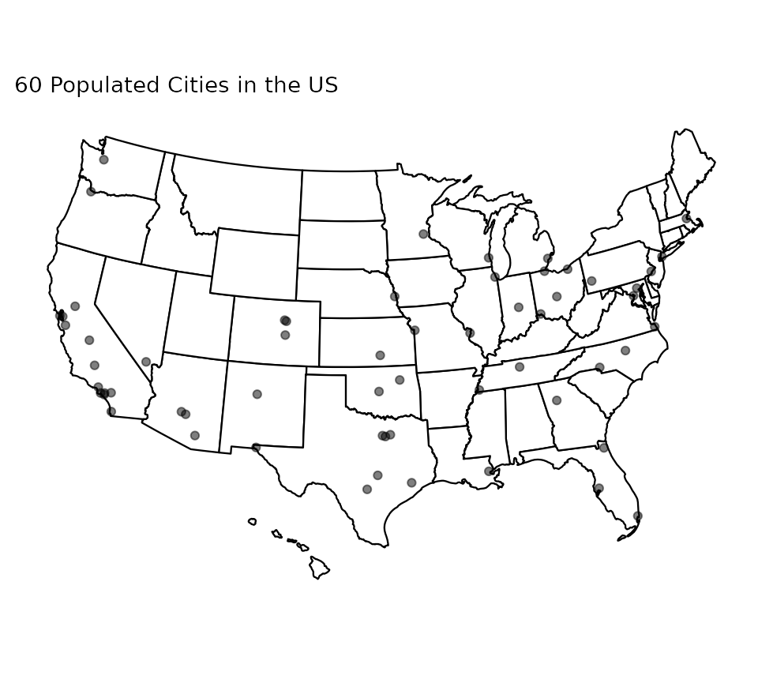
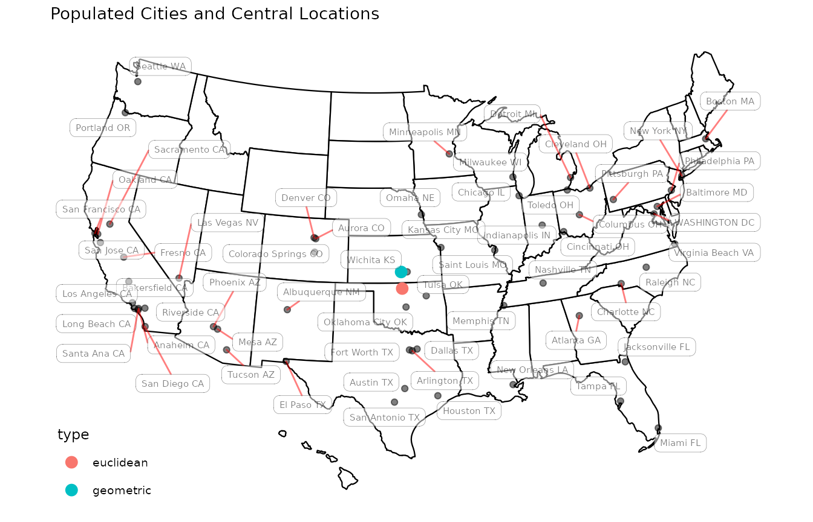

In this vignette, we demonstrate basic functionalities of Riemann package by walking through from installation to a simple analysis with the cities dataset for the sphere manifold \(\mathcal{S}^2\).
Riemann package can be installed via two outlets. A release version from CRAN can be installed
install.packages("Riemann")or a development version is available from GitHub with devtools package.
if (!require("devtools")) {
install.packages("devtools")
}
devtools::install_github("kisungyou/Riemann")Now we are ready to go by loading the library.
Our package is designed to be a friendly toolkit for those with less computational expertise. Therefore, we decided to make the structure and workflow of the package exposed to users as simple as possible. To serve its purpose best, we decided to be a bit coercive; users, prepare the data (please).
In geometric statistics, data are usually represented as matrices. That means, the biggest huddle would be to wrap your data in a suitable form. When you provide one of our wrapper functions - named wrap.***() - with your data. Then the process we call wrapping would check the suitability of your matrix data with respect to the definition of the manifold you want to use and even apply suitable transformation for you when possible.
As of Jan. 2006, there are 60 cities in the contiguous U.S. with population size larger than 300,000 (not the metropolitan areas, but just the cities). It is common in spatial statistics to represent locations on Earth with geographic coordinates - latitude and longitude. This representation can be freely transformed into cartesian coordinate representation \((x,y,z) \in \mathcal{S}^2 \subset \mathbb{R}^3\) and vice versa.
Here, our goal is to compute the center-most location for 60 populous cities. Before proceeding any further, let’s see how these cities are spread across the U.S. In Riemann package, the data is available under the name cities.
# load the necessary libraries for visualization
if (!requireNamespace("usmap", quietly = TRUE)){install.packages("usmap")}
if (!requireNamespace("ggplot2",quietly = TRUE)){install.packages("ggplot2")}
library(usmap)
library(ggplot2)
# load the cities dataset and apply converting
data("cities")
dfcities = data.frame(lon=cities$coord[,2], lat=cities$coord[,1], tt=cities$names)
mycities = usmap::usmap_transform(dfcities)
# visualize
myplot <- usmap::plot_usmap(regions="states", exclude=c("AK")) +
geom_point(data=mycities, aes(x=lon.1, y=lat.1), alpha=.5) +
labs(title="60 Populated Cities in the US")
plot(myplot)
In order to find the mean location of those cities, the first option would be to come up with an Euclidean way of thinking: do the averaging for longitude and latitude of all corresponding cities. However, a more geometrically sound way of doing it would be to find geodesic mean. Here, we will use riem.mean() function that computes Fréchet mean on the manifold. As we described above, the steps will be shown in the code snippet below. For the convenience, we also added the location information in cartesian coordinates as well.
# (WRAPPING) Spherical Data
myriem = wrap.sphere(cities$cartesian)
# (INFERENCE) Compute the mean & Convert back to Geographic Coordinates
intmean = as.vector(riem.mean(myriem)$mean) # vectorization for convenience
geomean = sphere.xyz2geo(intmean) # (lat, lon) will be returned
# (EXTRA)
# Compute Euclidean average of Geographic Coordinates
eucmean = as.double(base::colMeans(cities$coord))
# Merge two means
twomean = rbind(geomean, eucmean)
dfmeans = data.frame(lon=twomean[,2], lat=twomean[,1], type=c("geometric","euclidean"))
vismean = usmap::usmap_transform(dfmeans)
# visualize
myplot <- myplot +
geom_point(data=vismean, aes(x=lon.1, y=lat.1, col=type), size=3) +
ggrepel::geom_label_repel(data=mycities, aes(x=lon.1, y=lat.1, label=tt),
size = 2, alpha = 0.5,
label.r = unit(0.25, "lines"), label.size = 0.1,
segment.color = "red", segment.size = 0.5) +
labs(title="Populated Cities and Central Locations")
plot(myplot)
From the plot above, we can observe that geometric center is right next to Wichita, KS whereas euclidean center of locations is a bit deviated, lying between Wichita and Albuquerque, NM.